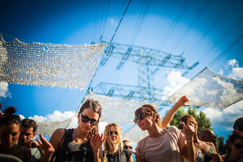
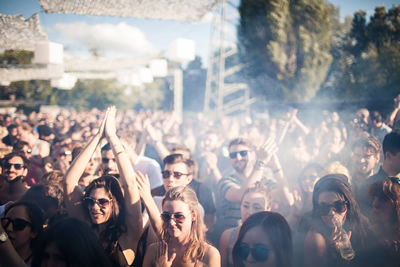
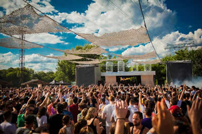
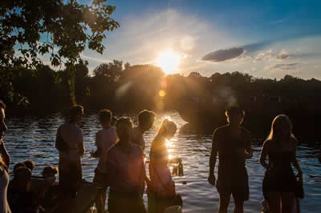

Watergate Open Air @ Rummelsberg, Berlin (27/07/14)

Summertime in Berlin means getting outside and enjoying the city’s myriad of electronic music delights in a sunnier setting, and the city’s Watergate Club makes its own hefty contribution to all the excellent events going off during the summer months. Often partnering with record labels for branded events, with the Life and Death, Suol and Mobilee stables featuring already earlier in the summer, Sunday was a party thrown simply under their own iconic name, with a range of DJs that make regular appearances at the Spree-side club.
In the absence of a label partner to provide theme for the day, the real star of Sunday’s party was the vibe itself, with the summer’s recent sway towards almost tropical storms holding out for an afternoon of blissfully warm, sunny weather. And it’s impossible to overplay the charms of the waterside Rummelsberg venue where Watergate throws its open-air parties every year. Berlin has some stunning open-air events and venues, but this might be the very best.
{kind=link}

Big enough to accommodate up towards around 1,000 punters, though without feeling too sprawling, the main ‘Beach’ stage is a big open space with sand on the dancefloor, and an immaculately tuned soundsystem. A brief walk down the sandy pathway at the back of the dancefloor opens up to the second ‘Waterstage’, which offers the perfect ruse if you’re looking for vibe that’s a little more laidback. Positioned to face the river’s edge, the stage is shaded under a canopy of trees, offering the feel of a laidback campsite.
{kind=link}

The ‘Waterstage’ was sporting a fine lineup this afternoon. While Get Physical stalwarts M.A.N.D.Y. were present for an early afternoon set, the overall vibe was markedly chilled out in comparison to the more roaring sounds being heard at the mainstage. Club resident La Fleur offered a similarly restrained set later on, which was a prelude for Hamburg veteran DJ Koze being given a full three hours to flex his skills with a more melancholic array of sounds.
{kind=link}

It was just after 5pm at the mainstage though where the party’s A+ list of headliners where warming up to take the party through to its 10pm close; the formidable trio of Catz 'N Dogz, Carl Craig and Pan-Pot over 5 hours. This lent towards a dancefloor energy that percolated suitably over the course of the day; further assisted by the netted canopy drawn over the crowd that sprinkled a light refreshing rain over everybody. Beyond the little details though, everything felt just right, with a perfect ‘lightning-in-a-bottle’ vibe that’s hard to quantify.
{kind=link}

Perhaps as a reflection of the fact that a sunny open-air calls for different performance tactics, Catz 'N Dogz responded with a set of fairly straightforward, groovy tech house, rather than indulging too much in the quirky extravagances of their Pets Recordings label.
Carl Craig who followed was more of an extravagant treat for the afternoon, beginning with a smattering of the more melodic, vocal-based house sounds, before transitioning smoothly into some decidedly deeper techno in the latter part of his 90 minutes. This positioned things perfectly for Pan-Pot to jump aboard to smash off the nonexistent roof off with some tough, throbbing techno for the final hours; some clever programming that had the intended impact.
With Pan-Pot powering to the end with Laurent Garnier’s eternal Crispy Bacon, punters were treated to the immaculate sight of the sun setting over the water to the left of the danceflloor. Ultimately, rather than the focus being too much on the DJ guests or record label curators, it was the crackling energy in the air that made this particular afternoon memorable.